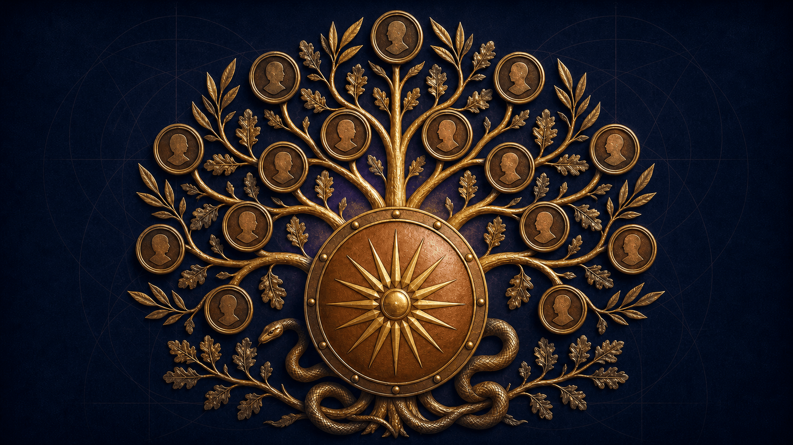
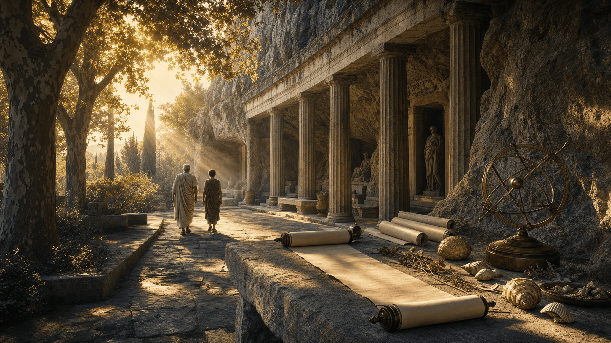
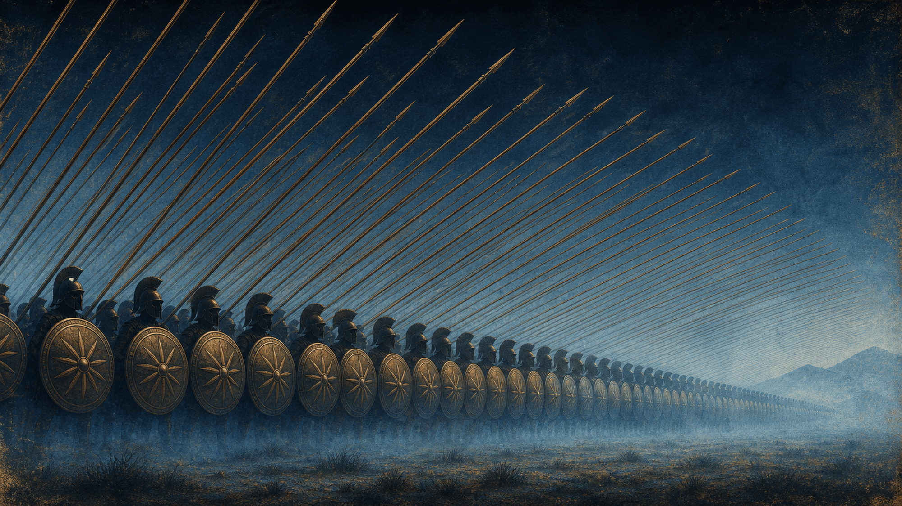
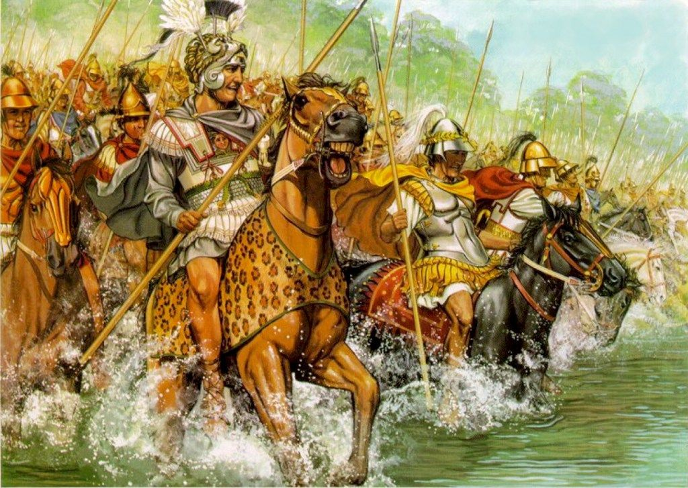
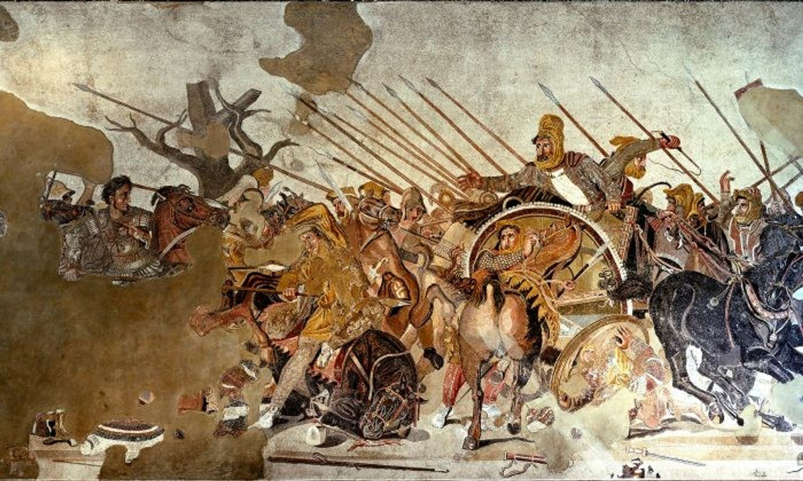
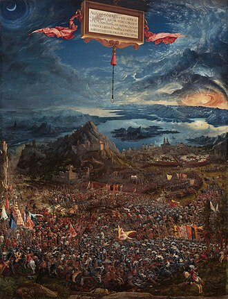
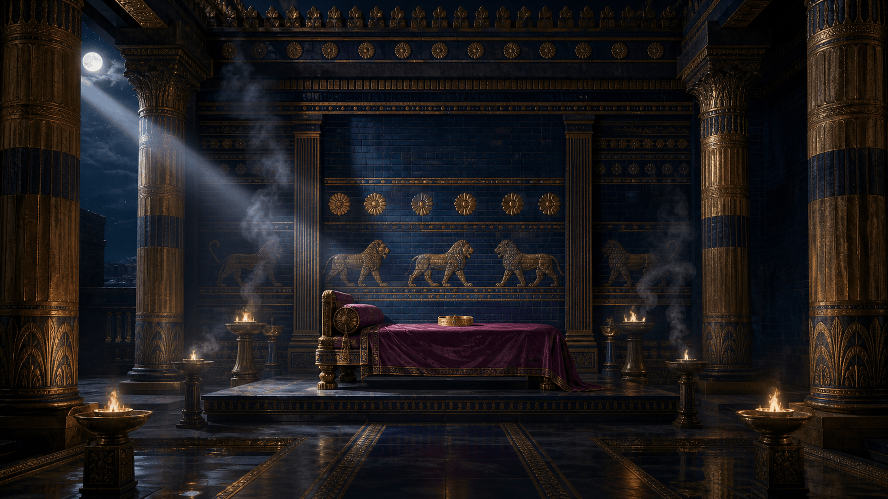

Le fil conducteur
« Un météore qui a embrasé le monde avant de s'y consumer »
Treize ans de règne, cinq millions de kilomètres carrés, quatre grandes batailles rangées — et pas une ligne écrite de sa main. Ce dossier suit Alexandre depuis la Macédoine méprisée des Grecs du Sud jusqu'aux rives de l'Indus, en tenant les deux bouts : la machine militaire et logistique d'un côté, le scénario mythologique qu'il joue en temps réel de l'autre. La transcription du live est conservée mot pour mot ; les encadrés « anti-intox » portent les vérifications, sans jamais toucher au texte transcrit.
Naissance à Pella — capitale du royaume de Macédoine.
Aristote précepteur au sanctuaire de Miéza.
Assassinat de Philippe II — Alexandre devient roi.
Granique, Issos, Gaugamèles — l'Empire achéménide s'effondre.
L'oasis de Siwa — l'oracle le salue « fils de Zeus-Amon ».
L'Hydaspe — les éléphants de Poros, puis le refus des troupes.
Mort à Babylone — à 32 ans, après dix jours d'agonie.
Trois clés pour lire Alexandre sans hagiographie — la source, la machine, et le mythe qu'il se raconte.
Pourquoi Alexandre n'est pas un document mais une construction : aucun écrit contemporain, des récits tardifs, et la Vulgate comme filtre.
Ce qui relève de la machine — phalange, logistique, renseignement, monnaie — et ce qui relève de la propagande divine soigneusement entretenue.
Comment les effectifs antiques se gonflent, comment une bévue devient un dessein divin, et pourquoi une mort à 32 ans nourrit toujours les théories.
Ouverture
Le conquérant, le mythe et les sources
Alexandre le Grand.
Déconstruire le mythe d'un conquérant.
Quand l'Histoire se lit sans filtre.
Introduction
Bienvenue à tous dans ce nouveau dossier de L'Empire Contre-Intox ! L'histoire retient d'Alexandre le Grand l'image fulgurante d'un conquérant insatiable, un météore traçant à travers les âges la trajectoire d'un empire immense, de la Macédoine jusqu'aux rives de l'Indus. Mais puisque nous sommes ici pour chasser les idées reçues et analyser les faits sans filtre, réduire sa geste à une simple suite de légendes hagiographiques serait passer à côté de l'une des mutations géopolitiques et culturelles les plus fascinantes de l'Antiquité.
Entre l'héritage ombrageux des cités grecques, la fascination mystique pour les grandes traditions pharaoniques et orientales, et l'enseignement rigoureux d'un Aristote qui a structuré (et parfois limité) sa pensée, Alexandre a redessiné les frontières du monde connu. Plus qu'un simple chef de guerre idéalisé, il fut l'architecte d'un immense choc des civilisations devenu synthèse, naviguant en permanence entre rationalité politique, propagande divine et la solitude tragique du pouvoir absolu. Enfilons nos lunettes épistémiques et passons au crible les rouages intimes et stratégiques de cette destinée hors du commun !
"Fiche technique / Infographie"
| Dates de règne : 336 – 323 av. J.-C. (13 ans de règne) |
| Âge au moment du décès : 32 ans |
| Territoires conquis : De la Grèce à l'Inde (plus de 5 millions de km²) |
| Batailles majeures : 4 grandes victoires rangées, des dizaines de sièges. |
Anti-intox · la fiche technique au crible
« 13 ans de règne » : arrondi. Alexandre règne de l'automne 336 à sa mort en juin 323, soit 12 ans et 8 mois.
« Plus de 5 millions de km² » : ce chiffre vient d'une estimation de Rein Taagepera (1978) ; les évaluations réelles vont de 3,5 à 5,2 millions de km² selon qu'on compte ou non les régions seulement nominalement soumises. À dire : « environ 5 millions de km² selon les estimations ».
« Des dizaines de sièges » : exagéré. On documente une dizaine de sièges majeurs — Halicarnasse (334), Tyr et Gaza (332), la Roche sogdienne (327), Massaga et Aornos (327-326), les Malliens (325). Les 4 grandes batailles rangées, elles, sont exactes : Granique, Issos, Gaugamèles, Hydaspe.
La date de la mort : les Journaux astronomiques babyloniens situent le décès au 10 ou 11 juin 323 (Britannica donne le 13). Il a alors 32 ans — il en aurait eu 33 en juillet.
Avant de plonger dans sa vie, posons une base épistémique essentielle, fidèle à notre démarche à L'Empire Contre-Intox : avons-nous des 'preuves' directes de l'existence d'Alexandre ? Pas au sens où l'entendent les sciences dures. Aucun écrit contemporain de sa main n'a survécu. Ce que nous étudions, ce n'est pas le journal intime d'Alexandre, mais une construction historique.
Son histoire a été entièrement reconstituée à travers des récits rédigés par des historiens et biographes (Arrien, Plutarque, Quinte-Curse) plusieurs siècles après sa disparition, souvent nourris par les mémoires de ses généraux ou par des textes officiels de propagande (la fameuse Vulgate). Faire de l'histoire ancienne, c'est donc enquêter sur des récits de seconde main, croiser l'archéologie, la numismatique (les monnaies) et traquer les biais pour séparer le mythe de la réalité factuelle.
... Faire de l'histoire ancienne, c'est enquêter sur des récits de seconde main. C'est pourquoi nous devons impérativement dénoncer le piège de la 'Vulgate' et de l'hagiographie. Les compagnons d'Alexandre, qu'il s'agisse de Ptolémée ou de Callisthène, avaient un intérêt politique direct à embellir, justifier ou travestir les faits (transformant par exemple une bévue militaire en choix stratégique divin). Notre posture critique consistera ici à nous méfier du 'récit unanime' des anciens et à croiser les disciplines — comme l'archéologie, la numismatique avec l'étude des monnaies, ou la géographie — pour valider ou invalider les faits historiques.
La règle du dossier
Tout ce qui suit est une reconstitution. Arrien écrit près de 450 ans après les faits, Plutarque et Quinte-Curce à peine moins. Quand une source dit « un million de Perses », ce n'est pas une mesure : c'est un effet de récit. Chaque chapitre de ce dossier conserve le déroulé du live intact et ajoute, à côté, ce que la recherche contemporaine peut réellement soutenir.


Chapitre I
L'affrontement paradigmatique — Égypte versus Grèce
I.L'affrontement paradigmatique – Égypte versus Grèce
Pour faire suite avec notre live Egypte/Grèce. Voici l'histoire d'Alexandre le Grand ne se résume pas à une simple suite de victoires militaires ; elle s'inscrit dans un choc géopolitique et civilisationnel majeur entre deux visions du monde : l'Hellénisme et l'Égypte pharaonique.
- La Grèce incarnait alors le modèle de la cité-État (la polis), de la philosophie critique, de la démocratie (bien que Sparte et la Macédoine fussent monarchiques) et d'une rationalité discursive naissante.
- L'Égypte, quant à elle, représentait l'antithèse sacrée : une monarchie théocratique millénaire, figée dans l'immutabilité de l'ordre cosmique (Maât), où le souverain est l'incarnation directe du divin sur Terre.
La conquête de l'Égypte par Alexandre en 332 av. J.-C. ne fut pas seulement une annexion territoriale. Elle constitua une synthèse dialectique : en se faisant couronner pharaon à Memphis et en fondant Alexandrie, Alexandre ne subjugua pas seulement l'Égypte, il l'absorba pour légitimer son pouvoir absolu. C'est le point de bascule où le conquérant grec revêt les attributs de la divinité orientale, inaugurant l'ère de l'hellénisme politique.
Voir le Dossier XXII — Ordre Divin ou Démocratie ? Égypte vs Grèce
Visualisation · Dynastie des Argéades
L'arbre d'Alexandre — quatre générations, une extinction
Touchez une figure pour lire sa fiche : dates, rôle, et destin. En quinze ans, la lignée qui a conquis le monde connu est entièrement éliminée — mère, demi-frère, sœurs, épouses, fils. L'arbre se lit aussi comme une carte des guerres des Diadoques.
Cliquez ou tabulez sur une figure
Sources : Arrien, Plutarque, Quinte-Curce et Diodore, contrôlés par Britannica, World History Encyclopedia, Livius.org et l'Encyclopædia Iranica. Les ascendances héroïques (Héraclès, Achille) sont des revendications dynastiques, pas des faits — elles sont figurées en pointillé pourpre.
Chapitre II
Origines géographiques et arbre généalogique
II. Origines géographiques et Arbre généalogique
A-La région d'origine : La Macédoine
Alexandre est né à Pella, capitale du royaume de Macédoine, situé aux confins septentrionaux du monde grec. Région de hauts plateaux, de plaines fertiles et de traditions guerrières, la Macédoine fut longtemps regardée avec mépris par les Grecs du Sud (Athéniens en tête, comme le souligne Démosthène dans ses Philippiques), qui la considéraient comme semi-barbare en raison de son organisation monarchique et de ses mœurs frustes. C'est pourtant de cette marge géographique que surgira l'unification forcée du monde hellénique.
B-Arbre généalogique simplifié
La légitimité d'Alexandre repose sur une double ascendance prestigieuse, savamment cultivée par sa propagande :

Amintas III (Roi de Macédoine)
|
Philippe II (Roi) = Olympias d'Épire
|
---------------------
| |
ALEXANDRE LE GRAND Cléopâtre (sœur)
- Côté paternel (La dynastie des Argéades) : Descendants, selon la légende, de Téménos d'Argos, et donc d'Héraclès lui-même.
- Côté maternel (Olympias d'Épire) : Descendante de Neoptolèmus, lui-même fils d'Achille.
Anti-intox · deux généalogies de propagande
Les Argéades se disaient Téménides — descendants de Téménos d'Argos, arrière-arrière-petit-fils d'Héraclès (Hérodote) ; Olympias appartenait aux Éacides de Molossie, qui se réclamaient de Néoptolème, fils d'Achille. Ce sont des revendications dynastiques, pas des filiations : le déroulé a raison d'écrire « selon la légende ». Deux traditions concurrentes existent d'ailleurs sur le fondateur macédonien (Perdiccas chez Hérodote, Caranos dans la version du IVe siècle).
Précision de vocabulaire : « Neoptolèmus » désigne ici le héros Néoptolème (Pyrrhos), fils d'Achille — à ne pas confondre avec Néoptolème Ier, roi des Molosses et père réel d'Olympias, qui porte le même nom.
1. Les Parents : Le couple terrible de la Macédoine
- Le père : Philippe II de Macédoine (382 – 336 av. J.-C.)
- Le profil : C'est le véritable architecte de la puissance macédonienne. Fin diplomate, brillant stratège, il est celui qui a unifié la Grèce sous sa coupe (via la Ligue de Corinthe) et créé l'outil militaire ultime (la phalange et la sarisse) qu'Alexandre utilisera.
- Ses relations avec Alexandre : Complexes et tumultueuses. Fier des talents de son fils, Philippe s'en méfiait aussi beaucoup, surtout après avoir répudié sa mère. Philippe est assassiné en 336 av. J.-C. lors du mariage de sa fille Cléopâtre par un de ses gardes du corps (Pausanias), dans des circonstances troubles où certains soupçonnèrent l'implication d'Olympias et d'Alexandre lui-même.
- La mère : Olympias d'Épire (v. 375 – 316 av. J.-C.)
- Le profil : Princesse d'Épire, c'est une femme ardente, magnétique et redoutable. Elle voue un culte secret aux mystères de Dionysos et manipule l'esprit de son fils dès son plus jeune âge en le persuadant qu'il n'est pas le fils de Philippe, mais le fruit d'une union avec Zeus lui-même (qui l'aurait visité sous la forme d'un serpent).
- Son influence : Elle insuffle à Alexandre son sens du destin exceptionnel et sa mégalomanie sacrée. Après la mort d'Alexandre, elle se livrera à une lutte acharnée pour le pouvoir pendant les guerres des Diadoques avant d'être exécutée.
Anti-intox · ce que Philippe II a vraiment créé
Il n'a pas créé « la phalange ». La phalange hoplitique grecque lui est très antérieure. Ce que Philippe crée, c'est la phalange macédonienne : une refonte autour de la sarisse, pique de 4 à 6 mètres qui donne à ses rangs une allonge décisive.
La Ligue de Corinthe date de 337 (après la victoire de Chéronée en 338) — et Sparte refuse d'y adhérer : « unificateur de la Grèce » vaut donc pour la quasi-totalité du monde grec, Sparte exceptée.
L'assassinat : octobre 336 à Aigai, lors du mariage de sa fille Cléopâtre avec Alexandre Ier d'Épire, par Pausanias d'Oreste, l'un de ses sept gardes du corps. L'implication d'Olympias ou d'Alexandre est un soupçon des sources antiques, jamais établi.
Olympias : sa naissance « v. 375 » est une estimation (fourchette v. 375-371) — le « vers » est indispensable. Sa mort en 316 n'est pas un accident de guerre : elle est exécutée sur ordre de Cassandre après la reddition de Pydna.
2. Les Frères et Sœurs (et demi-frères/sœurs)
Philippe II multipliant les mariages diplomatiques, la famille élargie d'Alexandre est vaste :
- Cléopâtre de Macédoine (sœur utérine) : Née de la même union entre Philippe et Olympias. C'est lors de son mariage que Philippe II est assassiné.
- Philippe III Arrhidée (demi-frère) : Fils de Philippe II et de Philinna de Larissa. Souffrant de troubles mentaux (peut-être empoisonné ou handicapé dès l'enfance), il sera paradoxalement proclamé roi de Macédoine après la mort d'Alexandre sous la tutelle de généraux, avant d'être exécuté par Olympias.
- Les autres demi-frères et demi-sœurs : Philippe II a épousé de nombreuses princesses pour sceller ses alliances (Audata, Philinna, Nicosipolis, Meda, et enfin Cléopâtre, une jeune noble macédonienne dont le mariage brisa le cœur et l'influence d'Olympias). La plupart de ces rivaux potentiels au trône furent éliminés par Alexandre ou ses partisans dès son accession au pouvoir en 336 av. J.-C.
Anti-intox · la liste des épouses de Philippe II
Satyros en dénombre sept : Audata (illyrienne), Phila d'Élimée (absente du déroulé), Nicésipolis de Phères (orthographe exacte), Philinna de Larissa, Olympias, Méda des Gètes, et Cléopâtre, nièce d'Attale. Le statut d'« épouse » plutôt que de compagne est discuté pour certaines d'entre elles.
Sur Arrhidée : l'empoisonnement par Olympias dans son enfance est une tradition tardive, pas un fait ; et son exécution est datée du 25 décembre 317 par les Journaux astronomiques babyloniens.
3. Les Épouses et la Descendance
Alexandre a épousé plusieurs femmes, principalement dans une optique de pacification et de fusion géopolitique avec les peuples vaincus (l'asiatisation de son empire) :
- Roxane (première épouse principale) : Princesse sogdienne (actuels Ouzbékistan/Tadjikistan), épousée en 327 av. J.-C. après une romance légendaire sur les roches d'Asie centrale. C'est une femme d'une grande beauté mais aussi d'un caractère implacable.
- Stateira II : Fille aînée de Darius III, épousée lors des fastueuses noces de Suse en 324 av. J.-C. pour légitimer sa mainmise sur la dynastie perse (Roxane la fera assassiner par jalousie peu après la mort d'Alexandre).
- Parysatis II : Autre princesse perse (fille d'Artaxerxès III), épousée également à Suse.
- La descendance (Le destin tragique de la lignée) :
- Alexandre n'a pas eu d'héritier direct de son vivant.
- Quelques mois après sa mort en juin 323 av. J.-C., Roxane donne naissance à un fils posthume : Alexandre IV.
- La fin tragique : Pris dans la tourmente des guerres des Diadoques (ses généraux qui se déchirent l'empire), le jeune Alexandre IV et sa mère Roxane seront emprisonnés puis assassinés vers 310-309 av. J.-C. par le général Cassandre.
Anti-intox · Roxane, Stateira, et le fils oublié
Roxane « sogdienne » : toutes les sources antiques qualifient son père Oxyartès de Bactrien — elle fut simplement capturée sur le « Rocher sogdien ». Dire « bactrienne, parfois dite sogdienne » est plus exact.
« Stateira II » est une convention moderne : Arrien appelle la fille aînée de Darius Barsine. Son assassinat par Roxane est le récit de Plutarque, qui y ajoute la complicité de Perdiccas et la mort de sa sœur Drypétis.
« Aucun héritier direct de son vivant » : aucun héritier légitime, exactement. Mais les sources mentionnent Héraclès de Macédoine (v. 327-309), fils supposé de sa maîtresse Barsine — son existence même est contestée, certains y voyant une fabrication de Polyperchon, qui tenta de le placer sur le trône en 309 avant de le faire assassiner. L'arbre interactif ci-dessus le figure en trait pointillé.
Chapitre III
Naissance, famille et l'influence de la mythologie
III. Naissance, Famille et l'Influence de la Mythologie
A-Naissance et Contexte Familial
Alexandre naît en juillet 356 av. J.-C. à Pella. Son père, Philippe II, est un fin stratège et diplomate qui a transformé la Macédoine en superpuissance militaire grâce à la création de la fameuse phalange macédonienne et de la sarisse. Sa mère, Olympias, princesse d'Épire, est une femme ardente, passionnée par les cultes mystiques (notamment ceux de Dionysos et des serpents), qui façonne très tôt l'esprit de son fils en le persuadant de sa nature divine.
B-Le mythe comme outil politique et psychologique
Pour Alexandre, la mythologie n'est pas un simple recueil de fables poétiques ; c'est un programme existentiel et géopolitique.
- Identification héroïque : Élevé avec l'exemplaire de l'Iliade annoté par Aristote (l'Iliade du poignard), Alexandre s'identifie à son ancêtre Achille. Il visite Troie (Ilion) dès le début de sa campagne asiatique pour y déposer des offrandes sur la tombe du héros.
- Légitimation divine : Lors de son passage en Égypte à l'oasis de Siwa en 331 av. J.-C., l'oracle d'Amon-Rê le salue comme "fils de Zeus-Amon". Cette reconnaissance mystique dépasse la simple flatterie : elle lui confère un statut surhumain indispensable pour gouverner des peuples aux traditions monarchiques et sacrées hétérogènes.
Anti-intox · la date de naissance
L'année 356 et le lieu (Pella) sont solides. Le mois, lui, repose sur Plutarque (le 6 du mois Hékatombaion), dont la conversion dans notre calendrier est disputée : la plupart retiennent le 20 ou 21 juillet, certains spécialistes proposent l'automne. Écrire « en 356, probablement en juillet ».
Chapitre IV
L'influence de la mythologie sur Alexandre
IV.L'influence de la mythologie sur Alexandre
C'est un angle absolument fascinant et crucial pour comprendre la psyché d'Alexandre. Chez lui, la mythologie n'est pas un simple divertissement culturel ou un vernis littéraire : c'est un moteur psychologique profond, un outil de légitimation politique et un véritable mythe personnel entretenu et nourri chaque jour, en grande partie par sa mère Olympias.
Analysons les rouages de cette influence psychologique et mythologique :
1. Le matriarcat mystique et l'ancrage divin (L'influence d'Olympias)
Dès son plus jeune âge, Alexandre est élevé par une mère qui est une figure incandescente et fanatique.
- Le mythe de la conception : Olympias propage et enracine dans l'esprit de son fils l'idée qu'il n'est pas le fils de Philippe II, mais que Zeus l'a engendré en se manifestant sous la forme d'un serpent.
- L'impact psychologique : Cette éducation inculque à Alexandre une mégalomanie sacrée et un sentiment de destinée absolue. Il ne se perçoit pas comme un simple roi mortel, mais comme un être à part, investi d'une mission divine. C'est ce qui explique son audace folle sur les champs de bataille : comment un fils de dieu pourrait-il mourir bêtement ? Il se jette au coeur du danger car il est convaincu de sa nature surhumaine.
2. L'identification pathologique à Achille : Le choix de la gloire brève
Alexandre ne se contente pas d'admirer les héros d'Homère ; il les incarne.
- L'Iliade du poignard : Il dort chaque nuit avec un exemplaire de l'Iliade annoté par Aristote sous son oreiller.
- Le syndrome d'Achille : Achille avait fait un choix existentiel fondateur : une vie longue, obscure et paisible, ou une vie courte, incandescente, couronnée d'une gloire éternelle (kleos). Alexandre choisit consciemment la seconde option.
- La mise en scène à Troie : Lorsqu'il débarque en Asie en 334 av. J.-C., son premier geste est de courir à Ilion (Troie), de courir nu autour de la tombe d'Achille et de déposer des offrandes. Il s'approprie le destin du héros grec au point de s'attendre à mourir jeune, consumé par sa propre légende.
3. Héraclès et Dionysos : Les modèles de l'impossible
Au-delà d'Achille, deux grandes figures mythologiques structurent la géographie mentale et la trajectoire des conquêtes d'Alexandre :
- Héraclès (côté paternel) : Ancêtre revendiqué de la dynastie des Argéades, Héraclès symbolise le dépassement des limites humaines, les "Travaux" surhumains et la pacification du monde. Alexandre cherchera constamment à surpasser ses ancêtres mythiques (notamment en réussissant là où Héraclès avait échoué, comme lors de la prise du rocher d'Aornos en Inde).
- Dionysos (côté maternel via Olympias) : Le dieu de l'enthousiasme, du vin, mais aussi de la conquête des Indes. Atteindre l'Inde et la dépasser, c'est pour Alexandre rejouer le mythe de la marche triomphale de Dionysos vers l'Orient.
Anti-intox · Aornos, ou l'aveu d'un historien antique
La prise du rocher d'Aornos (avril 326, actuel Pakistan — avant l'Hydaspe) est bien attestée. Mais l'idée qu'Héraclès y aurait échoué ne doit pas être présentée comme un fait : c'est Arrien qui la rapporte… et qui s'en méfie ouvertement, suggérant qu'on invoquait le nom d'Héraclès pour grandir le rocher — et donc l'exploit d'Alexandre. Un cas d'école de propagande repérée par la source elle-même. (S'y ajoute une couche d'interprétation : l'« Héraclès » indien est probablement une divinité locale assimilée par les Grecs.)
4. Le piège psychologique de la divinisation (L'épisode de Siwa)
En 331 av. J.-C., lorsqu'il se rend dans l'oasis de Siwa en Égypte, le prêtre de l'oracle d'Amon-Rê le salue comme "fils de Zeus" (l'équivalent grec d'Amon).
- Le basculement psychologique : Pour les Grecs, c'est de la hubris (la démesure orgueilleuse qui attire la colère des dieux). Mais pour Alexandre, c'est la validation officielle de ce que sa mère lui martèle depuis l'enfance.
- La rupture avec ses généraux : C'est là que la psychologie d'Alexandre se détache de la réalité politique macédonienne. En exigeant plus tard la proskynèse (la prosternation devant le roi, réservée aux dieux en Perse), il choque ses compagnons macédoniens pour qui un roi est un premier entre des pairs. Cette croyance intime en sa divinité crée une fissure psychologique et humaine profonde, l'isolant au sommet de son empire.
Bilan épistémique et analytique
L'emprise de la mythologie sur Alexandre montre que l'imaginaire est une force géopolitique concrète. Alexandre a conquis le monde non seulement avec des sarisses, mais en marchant littéralement à l'intérieur d'un scénario mythologique qu'il écrivait et interprétait en temps réel. C'est cette fusion totale entre la psychose héroïque, la propagande religieuse et la réalité militaire qui fait toute la tragédie de son personnage.
Chapitre V
Aristote — biographie, école, pensée et influence
V. Aristote : Biographie, École, Pensée et Influence
Fiche d'identité
Aristote (Οἱ ἀρισotέλης)
"L'étonnement est l'origine de la philosophie." — Aristote
A-État Civil & Origines
- Nom complet : Aristote de Stagire (en grec ancien : Aristotélēs).
- Date de naissance : 384 av. J.-C.
- Lieu de naissance : Stagire, une cité grecque située en Chalcidique (région côtière de la mer Égée, au nord de la Grèce).
- Date de décédée : 322 av. J.-C. (à l'âge de 62 ans).
- Lieu de décès : Chalcis, en Eubée.
- Origine sociale : Issu d'une famille aisée et influente. Son père, Nicomaque, était le médecin personnel du roi Amyntas III de Macédoine (grand-père d'Alexandre le Grand), ce qui ancrera très tôt les liens de la famille avec la cour macédonienne.

B-Parcours Intellectuel & Institutionnel
- L'Académie de Platon (367 – 347 av. J.-C.) : Arrivé à Athènes à l'âge de 17 ans, il entre à l'Académie de Platon. Il y reste vingt ans, d'abord comme élève puis comme enseignant, devenant le brillant critique de la théorie des Idées de son maître (célèbre formule attribuée : "Amicus Plato, sed magis amica veritas" / Platon est mon ami, mais la vérité m'est plus chère encore).
- La période d'itinérance (347 – 343 av. J.-C.) : À la mort de Platon (et en raison de tensions anti-macédoniennes à Athènes), il quitte l'Académie et voyage en Asie Mineure et à Lesbos, se consacrant à des recherches pionnières en biologie marine.
- Le Préceptorat d'Alexandre (343 – 340 av. J.-C.) : Recruté par le roi Philippe II de Macédoine pour éduquer le jeune prince Alexandre (âgé de 13 à 16 ans) dans le sanctuaire de Miezá. Il lui transmet le goût de la médecine, de la poésie homérique et des sciences naturelles.
- Fondation du Lycée / L'École Péripatéticienne (335 – 323 av. J.-C.) : De retour à Athènes, il fonde sa propre école, le Lycée. Les cours y sont souvent dispensés en marchant (peripatein), donnant le nom de "péripatéticiens" à ses disciples. L'approche y est empirique, inductive et encyclopédique.
- L'Exil final (323 av. J.-C.) : À la mort d'Alexandre le Grand, une violente vague anti-macédonienne submerge Athènes. Accusé d'impiété (tout comme Socrate avant lui), Aristote choisit de s'exiler à Chalcis pour "éviter qu'Athènes ne pèche une seconde fois contre la philosophie", selon ses mots. Il y meurt un an plus tard de troubles gastriques.
Anti-intox · quatre traditions prises pour des faits
1. « Amicus Plato, sed magis amica veritas » n'est pas d'Aristote. C'est une maxime latine médiévale qui paraphrase un passage de l'Éthique à Nicomaque (I, 6, 1096a11-15), où Aristote écrit qu'il est pieux d'honorer la vérité avant l'amitié. On la trouve chez Roger Bacon au XIIIe siècle, puis chez Cervantès et Newton. Le déroulé a la prudence d'écrire « formule attribuée » : c'est exactement le bon réflexe.
2. « Péripatéticiens = enseigner en marchant » est probablement une légende. Le nom vient plus vraisemblablement du peripatos, la promenade couverte (la colonnade) du Lycée. L'image du maître qui enseigne en marchant est une explication forgée après sa mort, qu'on fait remonter à Hermippe de Smyrne.
3. La phrase sur le « second péché contre la philosophie » est rapportée par Élien (Histoire variée III, 36), soit environ cinq siècles après les faits. À introduire par « la tradition rapporte que… », jamais par « selon ses mots ».
4. Les bornes du préceptorat. Le début (343, Alexandre a 13 ans) est bien attesté ; 340 est une reconstitution (c'est l'année où Alexandre devient régent). Les spécialistes retiennent « deux à trois ans », certains allant jusqu'à huit.
Enfin, la mort « de troubles gastriques » vient des biographies antiques tardives : Diogène Laërce parle d'une mort naturelle sans préciser. Et l'accusation d'impiété fut portée par l'hiérophante Eurymédon, au motif d'un hymne composé pour Hermias.
C-Pensée & Apports Majeurs
Aristote est souvent considéré comme l'un des esprits les plus universels de l'humanité, ayant posé les bases de presque toutes les disciplines scientifiques et humanistes :
- Logique : Il invente la logique formelle et le système du syllogisme (ensemble des écrits regroupés sous le nom d'Organon), structurant la pensée rationnelle occidentale pour des millénaires.
- Philosophie Politique : Dans La Politique, il théorise que l'homme est un "animal politique" (zoon politikon) fait pour vivre en société. Il analyse les différentes formes de constitution (démocratie, oligarchie, monarchie).
- Métaphysique & Physique : Il introduit les concepts fondamentaux de puissance et d'acte, de substance, et formalise la théorie des quatre causes (matérielle, formelle, efficiente, finale) pour expliquer le mouvement et la nature.
- Biologie & Sciences Naturelles : Véritable pionnier de l'histoire naturelle, il classifie des centaines d'espèces animales avec une précision empirique remarquable qui ne sera surpassée qu'au XIXe siècle.
- Éthique : Dans l'Éthique à Nicomaque, il prône la recherche du bonheur (eudaimonia) par la vertu, définie comme le juste milieu entre deux excès (par exemple, le courage est le juste milieu entre la lâcheté et la témérité).
D-Postérité & Bilan Épistémique
L'œuvre d'Aristote traverse les âges, récupérée et discutée par le monde arabe médiéval (Averroès, Avicenne), puis christianisée par la scolastique (Thomas d'Aquin au XIIIe siècle). Si la révolution scientifique du XVIIe siècle (Galilée, Newton) remettra en cause sa physique qualitative, sa rigueur classificatoire et son exigence logique demeurent les piliers fondateurs de la méthode scientifique rationnelle.
Anti-intox · deux précisions de chronologie
« Jusqu'au XIXe siècle » : l'Histoire des animaux traite plus de 500 espèces — un travail qui reste la référence occidentale jusqu'au XVIIIe siècle et à Linné (Systema Naturae, 1735-1758), Cuvier achevant le renversement au début du XIXe.
Avicenne avant Averroès : Avicenne meurt en 1037, Averroès naît en 1126. L'ordre du déroulé les inverse.
E-Le Lycée (L'École Péripatéticienne)
De retour en Macédoine puis à Athènes, Aristote fonde sa propre école en 335 av. J.-C. : le Lycée. Contrairement à l'académisme platonicien, l'enseignement y est marqué par l'observation de la nature, la classification des savoirs et la méthode inductive.
F-Pensée philosophique
La pensée aristotélicienne repose sur le réalisme : le monde sensible est le seul réel. En politique (La Politique), il théorise que l'homme est un "animal politique" (zoon politikon) fait pour vivre en cité. Cependant, face à l'immensité de l'Empire en construction, sa pensée sera mise à l'épreuve par son élève, qui remplacera la cité-État par l'œkoumène (l'univers habité).
G-Rencontre et Influence sur Alexandre
De 343 à 340 av. J.-C., Philippe II mandate Aristote pour être le précepteur du jeune Alexandre (âgé de 13 à 16 ans) dans le sanctuaire de Miezá.
- Transmission du savoir : Aristote insuffle à Alexandre la passion des sciences naturelles, de la médecine (il soignera souvent ses compagnons) et de la géographie.
- La supériorité grecque : Aristote transmet à Alexandre une vision ethno-centrée, lui conseillant de se comporter en "maître" avec les Grecs et en "despote" avec les Barbares. Sur ce point précis, Alexandre s'émancipera totalement de son maître en adoptant une politique de fusion des élites (le mariage de Suse, l'adoption des coutumes perses), provoquant l'incompréhension des philosophes grecs traditionnels.
Anti-intox · le « conseil » d'Aristote sur les Barbares
Ce conseil est rapporté par Plutarque (De la fortune ou de la vertu d'Alexandre, I, 6 — fragment 658 Rose), quatre siècles et demi après. C'est la seule source à l'attribuer nommément à Aristote : Strabon rapporte le même propos sans le nommer, dans un passage où Ératosthène le critique. Et le contexte compte : Plutarque écrit un exercice rhétorique dont la thèse — Alexandre unificateur du genre humain — a besoin d'un Aristote repoussoir. À dire : « un conseil que Plutarque prête à Aristote ».
Autre précision utile pour la suite du dossier : Callisthène n'est pas le neveu d'Aristote mais son petit-neveu (petit-fils de sa sœur Arimneste).
Chapitre VI
Conquêtes, stratégie, alliances et sécurité intérieure
VI. Conquêtes, Stratégie, Alliances et Sécurité Intérieure
A-L'Agrandissement de l'Empire et la Préparation des Guerres
L'expansion fulgurante d'Alexandre (de la Grèce jusqu'à l'Indus en moins de treize ans) repose sur une rupture tactique et logistique absolue :
- La combinaison interarmes : Utilisation conjointe de la cavalerie lourde (les Compagnons ou Hétaires), de l'infanterie légère, de la marine phénicienne et de la phalange macédonienne.
- La vitesse et l'audace : Attaques fulgurantes en terrain difficile (franchissement de l'Hindou Kouch, des Portes de Feu perses). Alexandre combat toujours à la tête de ses hommes, ce qui galvanise ses troupes mais multiplie les blessures graves.
- La logistique et le renseignement : Chaque campagne est précédée par des levées topographiques et l'intégration de géographes et d'historiens (comme Callisthène) dans son état-major.

B-Les Alliances et la Diplomatie
Alexandre ne gouverne pas seulement par le glaive ; il pratique le pragmatisme politique :
- Intégration des vaincus : Après la chute de Darius III, il maintient des satrapes perses en place lorsqu'ils font acte d'allégeance, s'assurant ainsi la continuité administrative de l'Empire achéménide.
- La politique matrimoniale : Pour sceller la paix avec les peuples iraniens, il épouse la princesse sogdienne Roxane, puis pousse ses officiers à épouser des nobles perses lors des noces de Suse (324 av. J.-C.).
C-Les Complots et la Crise de l'Autorité
À mesure que l'Empire s'étend et qu'Alexandre adopte les us et coutumes perses (comme la proskynèse, prosternation devant le roi), le fossé se creuse avec la vieille garde macédonienne. Des tensions structurelles naissent, menant à de graves crises politiques :
- L'affaire Philotas et Parménion (330 av. J.-C.) : Accusé de non-dénonciation d'un complot, Philotas est exécuté, et son père Parménion (le plus fidèle général de Philippe II) est assassiné par précaution.
- Le meurtre de Clitos le Noir (328 av. J.-C.) : Au cours d'un banquet arrosé, une violente dispute éclate entre Alexandre et Clitos (qui lui avait sauvé la vie à la bataille du Granique) au sujet de la décadence perse face à la tradition macédonienne ; Alexandre le tue de sa propre main dans un accès de rage, provoquant chez lui un profond remords.
- L'affaire des Pages et l'exécution de Callisthène (327 av. J.-C.) : La conjuration des jeunes pages royaux contre la vie d'Alexandre entraîne l'arrestation et la mort en captivité du philosophe Callisthène (neveu d'Aristote), marquant la rupture définitive entre le pouvoir royal absolu et la liberté critique des intellectuels grecs.
Anti-intox · la proskynèse n'était pas un culte
Point de correction classique : en Perse, la proskynèse n'était pas réservée aux dieux. C'était un geste de déférence sociale entre humains de rangs différents — un baiser envoyé de la main, une inclinaison, la prosternation complète étant réservée au Grand Roi. Les Perses n'y voyaient donc rien de divin. Ce sont les Grecs et les Macédoniens qui l'ont interprétée comme un acte d'adoration — et c'est ce malentendu culturel, autant que l'orgueil d'Alexandre, qui fait exploser l'affaire de 327.
Sur Callisthène : il est le petit-neveu d'Aristote, et les sources divergent sur sa fin — mort en captivité (Aristobule, Ptolémée parle de torture et de pendaison). Le déroulé retient la version la plus prudente.
Visualisation · Onze années de campagne
De l'Hellespont à l'Indus
La marche réelle, tracée sur une vraie carte : mai 334 — juin 323, environ onze années et plus de 30 000 kilomètres parcourus. Suivez la campagne étape par étape, ou touchez un point pour son contexte, ses effectifs vérifiés et ce que le récit antique a le plus déformé.
Fond de carte : Natural Earth (domaine public), échelle 1:50 m, projection de Mercator — les distances s'étirent vers le nord. Tracés d'itinéraire simplifiés à partir des étapes attestées (Arrien, Plutarque, Diodore, Quinte-Curce) ; la localisation de la Roche sogdienne reste incertaine (plusieurs candidats au sud de l'Ouzbékistan). Effectifs : fourchettes retenues par les historiens modernes — les chiffres antiques sont systématiquement gonflés.
Chapitre VII
Les batailles
VII. Les Batailles
A. La Bataille du Granique (Mai 334 av. J.-C.)
La brèche en terre asiatique
- Le Contexte : Premier affrontement majeur sur le sol asiatique, juste après le franchissement de l'Hellespont. Les satrapes perses attendent Alexandre sur les rives escarpées du fleuve Granique pour l'écraser avant qu'il ne s'implante solidement.
- La Configuration des Forces :
- Perses : Environ 40 000 hommes, dont une redoutable cavalerie placée en première ligne sur la berge haute, et des mercenaires grecs retranchés en arrière.
- Macédoniens : Environ 35 000 à 40 000 hommes.
- La Stratégie & Le Tournant Táctique : Les Perses ont l'avantage du terrain (la pente abrupte de la berge). Plutôt que de suivre l'avis de son général Parménion qui conseillait d'attendre le lendemain pour traverser, Alexandre ordonne une attaque immédiate et audacieuse. Il lance sa cavalerie d'élite (les Compagnons) en diagonale pour surprendre l'ennemi. Au cœur de la mêlée, Alexandre frôle la mort : le Perse Spithridatès lève son cimeterre pour l'abattre, mais le général macédonien Clitos le Noir lui tranche le bras in extremis (sauvant la vie du roi — ce même Clitos qu'Alexandre tuera de rage quelques années plus tard).
- Résultat & Enjeu : Victoire éclatante. Les mercenaires grecs au service de la Perse sont impitoyablement massacrés (considérés comme traîtres à la cause panhellénique), ouvrant à Alexandre les portes de l'Asie Mineure.

Document · La charge du Granique
La traversée du Granique vue par l'illustration historique moderne : Alexandre à la tête des Compagnons, franchissant le fleuve sous les traits.
Reconstitution d'artiste dans la tradition de l'illustration historique (style Peter Connolly) : casque à double plume, cuirasse et selle en peau de léopard suivent les descriptions de Plutarque et d'Arrien — mais la scène ordonnée et lisible est une convention du genre. Arrien décrit une mêlée confuse dans le lit même du fleuve, où Alexandre frôle la mort. Illustration tierce, créditée séparément — hors licence CC du dossier.
B. La Bataille d'Issos (Novembre 333 av. J.-C.)
Le piège et la fuite du Grand Roi
- Le Contexte : Darius III a massé une immense armée dans les plaines de Cilicie. Les deux armées se sont manquées de peu dans les défilés étroits, et se retrouvent nez à nez près de la ville d'Issos.
- La Configuration des Forces :
- Perses : Supériorité numérique écrasante, estimée entre 70 000 et 100 000+ hommes (cavalerie lourde, infanterie perse, mercenaires grecs).
- Macédoniens : Environ 30 000 à 35 000 hommes, resserrés dans un espace étroit entre la mer et les montagnes, ce qui annule l'avantage numérique perse.
- La Stratégie & Le Tournant Táctique : C'est le chef-d'œuvre tactique d'Alexandre. Constatant que le terrain force les Perses à se bloquer eux-mêmes, Alexandre applique le principe du coup de bélier direct. À la tête de sa cavalerie, il charge en coin, brise la ligne ennemie et fonce directement vers l'endroit exact où se trouve Darius III sur son char royal. Pris de panique face à l'audace suicidaire de la charge macédonienne, Darius III prend la fuite, abandonnant sa mère, son épouse et ses enfants aux mains d'Alexandre.
- Résultat & Enjeu : Déroute totale de l'armée perse. La capture de la famille royale offre à Alexandre un levier diplomatique absolu pour négocier la suite de la campagne et s'emparer des côtes phéniciennes.

Document · Mosaïque d'Alexandre
La Mosaïque d'Alexandre, découverte dans la Maison du Faune à Pompéi (v. 100 av. J.-C.), aujourd'hui au Musée archéologique national de Naples.
Elle représente très probablement Issos — ou Gaugamèles selon d'autres lectures : à gauche Alexandre, tête nue, transperce un cavalier perse ; au centre Darius III, bras tendu, tourne déjà son char. C'est une copie romaine d'une peinture grecque perdue du IVe siècle av. J.-C., soit la représentation la plus proche des faits qui nous soit parvenue — et déjà, elle raconte : le roi perse y est saisi à l'instant exact de sa fuite. Œuvre du domaine public.
C. La Bataille de Gaugamèles (Octobre 331 av. J.-C.)
Le chef-d'œuvre de l'encerclement
- Le Contexte : La bataille décisive pour le trône de l'Asie. Darius III a rassemblé une armée gigantesque, soigneusement choisie dans les satrapies orientales, sur une vaste plaine plane près d'Arbèles (actuel Irak), idéale pour déployer sa cavalerie et ses terrifiants chars fauchants.
- La Configuration des Forces :
- Perses : Supériorité numérique gigantesque (entre 40 000 et 120 000 selon les sources antiques, incontestablement beaucoup plus que les Macédoniens).
- Macédoniens : Autour de 40 000 à 47 000 hommes (40 000 fantassins, 7 000 cavaliers).
- La Stratégie & Le Tournant Táctique : Darius cherche à encercler les Macédoniens en étirant ses lignes. Alexandre utilise une ruse géniale : il déploie ses troupes en diagonale et en profondeur, créant un mouvement de diversion sur les flancs qui attire la cavalerie perse. Voyant un espace s'ouvrir au centre de la ligne ennemie, Alexandre forme un coin d'attaque acéré (une "pince") composé de sa cavalerie et de la fine fleur de son infanterie, et s'engouffre dans la brèche. Une fois de plus, il fonce droit sur Darius. Terrorisé par la percée fulgurante, le Grand Roi tourne à nouveau le dos et fuit.
- Résultat & Enjeu : C'est l'anéantissement politique de l'Empire achéménide. Babylone, Suse et Persépolis s'ouvrent à lui sans résistance majeure. L'empire perse est désormais à genoux.
Anti-intox · les effectifs, ce mensonge des sources
Gaugamèles — une attribution à corriger. La fourchette « 40 000 à 120 000 » n'est pas celle des sources antiques : Arrien annonce un million de fantassins et 40 000 cavaliers, Diodore 800 000, Quinte-Curce 250 000. La fourchette du déroulé est en réalité celle des estimations modernes (50 000 à 120 000, quelques historiens allant jusqu'à 250 000). Côté macédonien, les 47 000 d'Arrien sont, eux, jugés crédibles.
Granique. Face à Alexandre se dresse une armée satrapale, pas une armée royale : les modernes retiennent 15 000 à 40 000 hommes, en privilégiant le bas de la fourchette. Côté macédonien, ~32 000 fantassins et ~5 100 cavaliers, soit environ 37 000 — tous n'étant pas engagés. Après la bataille, environ 2 000 mercenaires grecs survivants sont envoyés enchaînés aux travaux forcés en Macédoine.
Issos. Les 600 000 hommes d'Arrien sont unanimement rejetés ; la fourchette moderne la plus citée est 60 000 à 100 000, l'école minimaliste (Delbrück) descendant jusqu'à 25 000. La date la plus souvent retenue est le 5 novembre 333. La famille capturée : sa mère Sisygambis, son épouse Stateira, deux filles et un fils.
« Près d'Arbèles ». C'est le nom traditionnel de la bataille, mais le champ de bataille de Gaugamèles est à une centaine de kilomètres d'Arbèles (Erbil), où Alexandre s'empara ensuite du char et du trésor de Darius. La date, 1er octobre 331, est calée par une tablette astronomique babylonienne — un rare point d'ancrage absolu.
D. La Bataille de l'Hydaspes (Mai 326 av. J.-C.)
L'épreuve des éléphants de guerre
- Le Contexte : Aux confins de l'Inde (dans l'actuel Pendjab), Alexandre fait face au redoutable roi indien Poros, qui attend sur la rive opposée du fleuve Hydaspes avec une arme inédite pour les Macédoniens : des éléphants de guerre.
- La Configuration des Forces :
- Indiens : Environ 30 000 à 35 000 fantassins, des chars lourds, et un corps d'élite de 85 à 200 éléphants de guerre.
- Macédoniens : Environ 35 000 à 40 000 hommes.
- La Stratégie & Le Tournant Táctique : Le fleuve est en crue, large et difficile à traverser sous les yeux de l'armée de Poros. Alexandre utilise la ruse psychologique et la diversion : il orchebre des simulacres de traversée nocturne pendant des semaines jusqu'à ce que les Indiens s'en désintéressent. Puis, par une nuit de violent orage, il franchit discrètement le fleuve en amont avec une force d'attaque. Face aux charges terrifiantes des éléphants (qui piétinent la phalange et effrayent les chevaux macédoniens), Alexandre fait preuve d'une plasticité tactique exemplaire : il ordonne à ses archers et à sa infanterie légère de cibler les cornacs (les conducteurs) et les yeux des bêtes, tout en encerclant la masse indienne avec sa cavalerie supérieure.
- Résultat & Enjeu : Victoire très difficile mais totale. Impressionné par la bravoure de Poros (qui, capturé et blessé, lui demande d'être traité "en roi"), Alexandre l'épargne et en fait son allié. Ce sera la dernière grande bataille d'Alexandre : épuisées par des années de marche, rongées par la mousson et la nostalgie, ses troupes refuseront d'aller plus loin.
E. Le Siège de Tyr (Janvier – Juillet 332 av. J.C.)
L'impossible défi insulaire
- Le Contexte : Après Issos, la ville phénicienne de Tyr refuse de lui ouvrir ses portes. Problème : la cité est bâtie sur une île fortifiée à près d'un kilomètre du continent et dispose d'une immense flotte.
- La Tactique : Ne disposant pas de marine suffisante au départ, Alexandre réalise un exploit d'ingénierie militaire monumental en construisant une digue immense (un môle) en pierres et en bois depuis le continent pour relier l'île aux remparts. Face aux contre-attaques navales perses, il finit par rassembler une flotte hétéroclite (Phéniciens, Cypriotes).
- Résultat : Après sept mois de siège et des assauts au moyen de tours de siège montées sur des navires, les murs s'effondrent. C'est l'un des plus grands chefs-d'œuvre de poliorcétique (l'art d'assiéger) de l'Antiquité.
F. La Bataille des Portes Persiques (Hiver 330 av. J.-C.)
Le "Thermopylae" perse
- Le Contexte : Juste après Gaugamèles, alors qu'Alexandre marche vers Persépolis (la capitale de l'empire), son armée se heurte à un col étroit dans les montagnes du Zagros.
- La Tactique : Le satrape perse Ariobarzanes y piège les Macédoniens en faisant pleuvoir des rochers et des flèches depuis les hauteurs. C'est la seule véritable défaite tactique initiale d'Alexandre, qui subit de lourdes pertes et doit battre en retraite provisoire. Refusant d'abandonner, Alexandre utilise la même ruse que les Perses avaient employée contre les Spartiates aux Thermopylae : guidé par un habitant local par des sentiers de montagne escarpés, il prend les Perses à revers par une manœuvre d'encerclement nocturne.
- Résultat : Victoire décisive qui brise le dernier verrou protégeant le cœur historique de l'Empire perse.
★ Focus thématique : La fondation d'Alexandrie (331 av. J.-C.)
- Le choix du site : Entre la Méditerranée et le lac Mariout, une position clé pour connecter la Méditerranée et l'Égypte.
- La vision urbanistique : Bien plus qu'un simple poste militaire, la volonté de créer un grand carrefour commercial et culturel (le plan hippodamien, l'influence grecque sur le sol égyptien).
Note de régie du déroulé
Placer la fondation d'Alexandrie juste après les Portes Persiques (et la prise de Persépolis/Suse) permet de montrer le contraste saisissant entre la phase de destruction/conquête brutale au cœur de l'Empire perse et la vision urbanistique et géopolitique d'Alexandre en Égypte.
Cependant, un petit point historique s'impose : chronologiquement, la fondation d'Alexandrie a eu lieu avant les Portes Persiques (Alexandrie est fondée en 331 av. J.-C. lors de sa campagne en Égypte, tandis que le passage des Portes Persiques et l'incendie de Persépolis ont lieu au début de 330 av. J.-C.).
1. La fondation de la cité phare
Alexandre fonde Alexandrie en 331 av. J.-C. lors de son passage en Égypte, avant même sa campagne en Perse. Il choisit un emplacement stratégique entre la mer Méditerranée et le lac Mariout, face à l'île de Pharos. C'est la plus célèbre et la plus florissante des nombreuses villes qu'il a baptisées de son nom. À sa mort, son corps y sera d'ailleurs ramené par Ptolémée Ier pour y être inhumé dans un somptueux tombeau.
2. Le cœur de l'Époque hellénistique (La dynastie lagide)
Sous l'impulsion de Ptolémée Ier et de ses descendants (les Ptolémées ou Lagides), Alexandrie devient rapidement la capitale politique de l'Égypte, mais surtout la capitale culturelle et intellectuelle du monde méditerranéen :
- La Grande Bibliothèque d'Alexandrie : Voulue pour abriter la somme de tout le savoir humain, elle rassemble des centaines de milliers de rouleaux de papyrus et attire les plus grands savants, mathématiciens (comme Euclide), géographes et poètes de l'époque.
- Le Phare d'Alexandrie : L'une des Sept Merveilles du monde antique, une tour gigantesque haute de plus de 100 mètres qui guidait les navires et symbolisait la puissance de la cité.
- Le Mouseion : Véritable temple dédié aux Mouses, qui s'apparente aux premiers instituts de recherche scientifique et universités de l'Histoire.
3. Le grand creuset culturel (Le syncrétisme)
Alexandrie incarne par excellence l'esprit hellénistique : un immense carrefour où se mélangent les cultures grecque, égyptienne, juive et orientale. C'est de là que naîtront de nouvelles figures religieuses et philosophiques, comme le dieu Sérapis (mélange de divinités grecques et égyptiennes) et plus tard une intense effervescence intellectuelle chrétienne et néoplatonicienne.
4. La chute face à Rome
Tout comme le reste de l'empire, le destin d'Alexandrie basculera avec la puissance romaine. Devenue un enjeu géopolitique majeur, la ville vivra ses derniers moments de gloire indépendante sous la reine Cléopâtre VII, avant de tomber définitivement entre les mains d'Octave (le futur empereur Auguste) en 30 av. J.-C., marquant la fin de l'Égypte ptolémaïque et le début de sa transformation en simple province romaine
Anti-intox · Alexandrie au crible
⚠️ Le tombeau : deux Ptolémées, pas un. C'est bien Ptolémée Ier qui détourne le cortège funèbre en Syrie (fin 322 / début 321) — mais il fait d'abord inhumer le corps à Memphis, alors siège de son pouvoir en Égypte (Pausanias I, 6 ; la Chronique de Paros, 321-320, confirme). Le transfert à Alexandrie est l'œuvre de Ptolémée II Philadelphe, vers 280 av. J.-C. ; le mausolée, le Sōma, devient le centre du culte royal. Son emplacement exact est perdu depuis l'Antiquité tardive — plus de 140 tentatives officielles de localisation recensées, aucune concluante.
⚠️ « Des centaines de milliers de rouleaux » : l'ordre de grandeur traditionnel, débattu. Les chiffres transmis par les sources tardives oscillent de ~40 000 à 700 000 volumes (Aulu-Gelle, Tzetzès) ; une partie des fonds était d'ailleurs dispersée entre le Mouseion et le Sérapeum. Euclide, lui, y travaille bien sous Ptolémée Ier (~300 av. J.-C.).
✓ Le Phare et la fondation : tour élevée sous Ptolémée Ier–II (achevée v. 280) sur l'île de Pharos, haute d'environ 100 à 130 mètres selon les reconstitutions — bien l'une des Sept Merveilles de la liste canonique. La date de 331 pour la fondation est la date traditionnelle (parfois précisée au 7 avril), sur le site du village égyptien de Rhakôtis, avec un plan confié à l'architecte Dinocrates — le « plan hippodamien » du déroulé est le bon terme.
✓ Sérapis et la chute de 30 av. J.-C. : le culte de Sérapis est bien une création syncrétique promue sous Ptolémée Ier (Osiris-Apis fondu à des traits de Zeus, Hadès et Asclépios). Et le 1er août 30 av. J.-C., Alexandrie tombe aux mains d'Octave : l'Égypte devient province romaine. Dates et séquence du déroulé : exactes.
Coquille du déroulé : « Mouses » → lire « Muses » (le Mouseion est le temple des Muses). Et la note de régie ci-dessus a raison : Alexandrie (331) est bien antérieure aux Portes Persiques (330) — l'ordre du live est narratif, pas chronologique.
G. Le Siège de la Roche de Sogdiane (327 av. J.-C.)
L'escalade de l'impossible
- Le Contexte : Dans les satrapies supérieures (Asie centrale actuelle), les rebelles sogdiens se retrachent sur une forteresse naturelle juchée sur un pic rocheux vertical réputé imprenable, persuadés qu'Alexandre aura "besoin d'hommes ailés" pour les déloger.
- La Tactique : Alexandre fait appel à des volontaires spécialisés dans l'escalade de roches abruptes (ses "chasseurs de montagne"). De nuit, à l'aide de cordes et de piquets de tente plantés dans la neige et la roche gelée, un commando de 300 Macédoniens gravit la paroi vertigineuse et s'établit sur les hauteurs surplombant la place forte, menaçant de jeter des banderoles blanches en signe de capitulation imminente.
- Résultat : Terrorisés par cette apparition "surnaturelle", les assiégés se rendent sans combattre. C'est lors de cette campagne qu'Alexandre rencontre et épouse la princesse sogdienne Roxane.
Anti-intox · quatre corrections sur les batailles
1. Hydaspe : 11 000 hommes, pas 40 000. Les 35 000 à 40 000 correspondent à l'armée régionale d'Alexandre — mais la force qui a réellement livré bataille est celle qui a traversé le fleuve de nuit : environ 11 000 hommes (~5 000-6 000 fantassins, ~5 000 cavaliers), le reste demeurant au camp sous Cratère. Livius résume : Alexandre n'engagea qu'« un sixième de ses forces ». À l'inverse, la fourchette « 85 à 200 éléphants » du déroulé est exemplaire — c'est exactement l'écart entre Diodore (85) et Arrien (200).
2. La mutinerie n'a pas lieu à l'Hydaspe mais plus à l'est, sur l'Hyphase (le Beas), après l'Hydaspe et après le siège de Sangala. Et l'Hydaspe est sa dernière grande bataille rangée : les combats continuent ensuite (campagne des Malliens, où il est grièvement blessé).
3. La Roche sogdienne : un contresens à rectifier. Les linges blancs ne sont ni une capitulation ni un message aux assiégés. Arrien est explicite : parvenus au sommet à l'aube, les grimpeurs agitent des morceaux de lin — sur ordre d'Alexandre — pour signaler leur réussite à l'armée restée en bas. Alexandre fait alors crier aux défenseurs de lever les yeux : il a trouvé ses hommes ailés. Détail exact et glaçant conservé par Arrien : une trentaine des 300 grimpeurs tombèrent dans la neige, et leurs corps ne furent jamais retrouvés ni ensevelis. Enfin, la rencontre avec Roxane est discutée : Arrien la place bien à la Roche sogdienne, mais Strabon, Plutarque et Quinte-Curce la situent à la Roche de Sisimithrès.
4. Portes Persiques : « seule défaite » est trop fort. C'est un revers réel, le plus net depuis le siège d'Halicarnasse — mais pas le seul. L'identité du guide varie selon les sources (berger, prisonnier, chef local), et les historiens soupçonnent le motif d'être calqué sur l'Éphialtès d'Hérodote : le parallèle avec les Thermopyles est peut-être déjà une construction des auteurs antiques. Ce qui n'enlève rien au fait : le revers est réel, et Arrien — le plus favorable à Alexandre — est justement celui qui le minimise. Un indice, en soi.
Ce panorama montre qu'Alexandre n'était pas seulement un stratège de grandes plaines (comme à Gaugamèles), mais un chef capable de s'adapter à tous les environnements : la mer et la roche avec Tyr, les défilés étroits des montagnes, et les pics glacés d'Asie centrale.
Ressource du live
The Ambush That Stopped Alexander — Persian Gate (330 BCE)
Cette vidéo analyse en détail la seule véritable embuscade tactique qui a failli stopper net la marche d'Alexandre dans les montagnes persiques.
★ Focus Thématique: Les limites du monde connu et l'angle mort de la Chine
- Le mur mental et physique : À mesure que les troupes d'Alexandre s'enfoncent vers l'Asie centrale et l'Indus, elles se heurtent à l'épuisement total et à la mutinerie de l'armée. Mais au-delà de la fatigue, c'est une limite conceptuelle totale.
- Le grand absent de la carte : Ni Alexandre ni la science grecque de son époque ne soupçonnent l'existence de la Chine (alors en pleine période des Royaumes combattants). Convaincu d'avoir atteint les confins de la Terre d'après la géographie homérique bordée par l'Océan mondial, Alexandre ignore totalement qu'à quelques milliers de kilomètres à l'est se trouve une autre superpuissance en train de structurer son propre empire.
- L'illusion du "Maître du Monde" : Un formidable angle d'attaque critique pour le live : comment prétendre conquérir le monde quand on en ignore l'exacte moitié ?
Anti-intox · l'angle mort chinois, vérifié
✓ Le fait central est exact. Ni Alexandre ni la géographie grecque de son temps ne connaissent la Chine : l'œkoumène s'arrête à l'Inde et aux steppes d'Asie centrale. Les premières mentions gréco-romaines des « Sères » — les « gens de la soie » — n'apparaissent qu'au Ier siècle av. J.-C. (Strabon, Virgile, Horace), près de trois siècles après la campagne ; et le contact indirect durable, la route de la soie, ne s'établit qu'avec les Han.
✓ La chronologie colle. La période des Royaumes combattants court de ~475 à 221 av. J.-C. : Alexandre meurt en plein dedans, un siècle avant l'unification Qin (221) qui forge l'empire chinois. « Une superpuissance en train de structurer son propre empire » est une formule juste — les royaumes de Qin, Chu, Qi, Wei, Zhao, Han et Yan se consolident exactement à ces décennies-là.
⚠️ « L'exacte moitié » est une image, pas une mesure. Hors de la carte grecque, il n'y avait pas que la Chine : l'intérieur de l'Afrique, l'Europe du Nord et les Amériques échappaient tout autant à l'œkoumène. Mais l'argument du déroulé vise le seul autre monde civilisationnel complet alors en voie d'unification — et sur ce point précis, il est défendable.

Document · La bataille vue par la Renaissance
Albrecht Altdorfer, La Bataille d'Alexandre à Issos (Alexanderschlacht), 1529, Alte Pinakothek, Munich.
Mille huit cents ans après les faits, un peintre allemand représente Issos… avec des armures et des piques du XVIe siècle, sous un ciel cosmique. Le tableau est un chef-d'œuvre — et un rappel méthodologique : chaque époque repeint Alexandre à son image. C'est exactement ce que fait la Vulgate avec les mots. Œuvre du domaine public.
Chapitre VIII
L'exploration du monde et l'héritage scientifique
VIII.L'exploration du monde et l'héritage scientifique
1. La logistique et l'intendance : Le vrai secret des victoires d'Alexandre
On oublie trop souvent que la guerre antique ne se gagne pas seulement sur un coup de panique de Darius ou une charge de cavalerie, mais par le ventre.
- Les "compagnons de route" civils : L'armée d'Alexandre n'était pas seulement composée de soldats, c'était une véritable cité en mouvement. Elle comptait des géographes (pour lever les cartes des territoires inconnus), des ingénieurs (pour les ponts et machines de siège), des historiens officiels, des botanistes, mais aussi des milliers de non-combattants (femmes, enfants, marchands, esclaves).
- L'approvisionnement (la poliorcétique logistique) : Comment nourrir 40 000 hommes et leurs chevaux en plein désert ou en haute montagne ? Mentionner la maîtrise des lignes maritimes le long des côtes phéniciennes et égyptiennes permet de déconstruire le mythe du "génie improvisateur" pour montrer une machine logistique redoutable et planifiée.
Anti-intox · qui marchait vraiment avec l'armée
Les bématistes — Baiton, Diognète, Philonidès — mesuraient les itinéraires au pas ; leurs relevés serviront ensuite aux géographes grecs. Les ingénieurs existaient bien (Diadès de Pella, « celui qui prit Tyr avec Alexandre »). En revanche, aucun botaniste patenté n'accompagnait l'expédition : Théophraste n'a jamais quitté la Grèce: il a exploité, à Athènes, les échantillons et les rapports rapportés d'Asie pour son Histoire des plantes. L'étude de référence sur le train et le ravitaillement est Donald W. Engels, Alexander the Great and the Logistics of the Macedonian Army (University of California Press, 1978).
2. La politique monétaire et la diffusion de l'économie globale
Alexandre n'a pas seulement déplacé des armées, il a aussi déplacé des masses d'or colossales.
- Le trésor de l'Empire perse : En s'emparant des immenses réserves thésaurisées dans les capitales perses (Persépolis, Suse, Babylone), Alexandre a libéré des tonnes de lingots d'or et d'argent accumulés par les Achéménides.
- La première monnaie internationale : Il uniformise la frappe monétaire à travers tout l'empire (le tétradrachme à l'effigie d'Héraclès/Zeus), créant de fait une première "zone euro" antique qui dynamise le commerce de la Méditerranée jusqu'aux portes de l'Inde.
Anti-intox · le tétradrachme, pièce par pièce
Ce que montre la pièce : au droit, Héraclès jeune coiffé de la léonté (la dépouille du lion de Némée) — c'est l'ancêtre mythique des rois macédoniens, pas le portrait d'Alexandre ; l'Héraclès ne prend des traits alexandrins que sur les frappes posthumes. Au revers, Zeus assis, aigle sur la main tendue, et la légende ΑΛΕΞΑΝΔΡΟΥ.
« Première monnaie internationale » est trop fort : la chouette d'Athènes et la darique perse circulaient déjà bien au-delà de leurs frontières. Ce qui est neuf, c'est le standard unique — le standard attique, ~17,2 g — frappé dans des dizaines d'ateliers de la Macédoine à Babylone. Ces « alexandres » survivront près de deux siècles à leur émetteur.
Les trésors : les 120 000 talents de Persépolis et les 40 000-50 000 de Suse viennent de Diodore — des ordres de grandeur transmis, probablement gonflés. À citer avec leur source.
3. Le "miracle" scientifique et la cartographie du monde
L'expédition d'Alexandre a agi comme une gigantesque mission d'exploration scientifique.
- L'élargissement de l'œkoumène : Avant lui, les Grecs avaient une vision très limitée du monde oriental. Les récits de ses compagnons (comme Néarque qui a exploré par la mer le golfe Persique de l'Indus jusqu'à l'Euphrate) ont fourni aux géographes grecs (comme Ératosthène plus tard) des données inestimables sur les mousson, la faune, la flore et les fleuves d'Asie.

4. La mort énigmatique d'Alexandre : Enquête criminelle ou pathologie ? (Le grand final)
Plutôt que de s'arrêter brutalement sur la fin des conquêtes, on va consacrer une courte conclusion ou un dernier paragraphe à sa mort à Babylone en juin 323 av. J.-C. (à seulement 32 ans).
- Les faits cliniques : Une fièvre fulgurante après une nuit de lourds banquets, une agonie de dix jours où il perd l'usage de la parole.
- L'approche épistémique (Toxico-pathologie) : Entre la thèse officielle de la maladie (paludisme, fièvre typhoïde ou pancréatite aiguë liée à l'alcool) et la thèse du complot (un empoisonnement par ses généraux qui commençaient à craindre sa mégalomanie croissante, impliquant parfois le mystérieux poison fourni par Antipater), c'est un formidable cas d'étude "contre-intox" pour finir en beauté !
Anti-intox · l'enquête sur la mort, état des lieux
La date la plus précise de toute l'Antiquité : un journal astronomique babylonien place la mort du roi entre le soir du 10 et le soir du 11 juin 323. C'est une tablette d'observation, pas un récit : le point d'ancrage le plus solide du dossier.
Les faits cliniques retenus : fièvre, aggravation sur dix à douze jours selon les sources, aphonie terminale — les soldats défilent devant lui, il ne peut plus répondre que d'un signe.
Aucune thèse n'est établie. Paludisme, typhoïde, pancréatite alcoolique, pneumonie, virus West Nile, empoisonnement : ce sont des hypothèses concurrentes. La seule référence à comité de lecture avec DOI vérifié sur l'empoisonnement est Schep, Slaughter, Vale & Wheatley, Clinical Toxicology 52(1), 2014, p. 72-77 (DOI 10.3109/15563650.2013.870341), qui privilégie l'ellébore blanc (Veratrum album) — l'arsenic et la strychnine tuant trop vite pour une agonie de douze jours. L'accusation contre Antipater est une tradition antique déjà contestée dans l'Antiquité : Arrien la mentionne pour la rejeter.
Néarque : la flotte quitte l'Indus fin septembre 325 et rejoint Alexandre en 324 ; son Indikè est perdue, connue par Arrien et Strabon. Le lien avec Ératosthène est réel mais indirect : né une quarantaine d'années après la mort d'Alexandre, il exploite les rapports des bématistes et de Néarque.
Chapitre IX
Sources et références épistémologiques
Avant de plonger dans le détail des sources, posons la règle d'or de notre enquête critique à L'Empire Contre-Intox : il ne faut jamais gober un récit sous prétexte qu'il est ancien. L'histoire d'Alexandre le Grand souffre d'un biais magistral : la Vulgate. Les premiers récits de sa vie n'ont pas été écrits par des observateurs neutres, mais par ses propres compagnons de route (comme Ptolémée ou l'historien Callisthène), qui avaient un intérêt politique direct à embellir la réalité, à justifier ses abus ou à transformer des bévues militaires en desseins divins. Notre posture critique consiste donc à refuser le piège du 'récit unanime' des Anciens. Pour séparer le fait historique de la propagande, l'historien doit croiser les disciplines — qu'il s'agisse de l'archéologie, de la numismatique en étudiant les frappes monétaires, ou de la géographie de terrain. C'est à ce prix-là que l'on fait de la véritable science historique.
Sources et Références Épistémologiques
L'histoire d'Alexandre pose un défi historiographique majeur : aucun écrit contemporain d'Alexandre n'a survécu. Les historiens modernes doivent travailler sur des sources secondaires rédigées plusieurs siècles après les faits, souvent empreintes de propagande (la Vulgate d'Alexandre) ou de hagiographie.
- Arrien (Ier-IIe siècle ap. J.-C.) : Anabase d'Alexandre. Considérée comme la source la plus fiable sur le plan militaire, car basée sur les mémoires perdus de Ptolémée et d'Aristobule.
- Plutarque (Ier-IIe siècle ap. J.-C.) : Vie d'Alexandre (dans les Vies parallèles). Source psychologique et morale essentielle, bien que plus soucieuse d'anecdotes que de stratégie globale.
- Quinte-Curse (Ier siècle ap. J.-C.) : Histoires d'Alexandre le Grand. Œuvre romanesque mais riche en détails sur les complots et l'évolution psychologique du roi.
- Diodore de Sicile (Ier siècle av. J.-C.) : Bibliothèque historique (Livre XVII). Offre une vue d'ensemble précieuse, héritière de la tradition de Clitarque.
Anti-intox · ce qu'est exactement la « Vulgate »
La Vulgate désigne la tradition issue de Clitarque d'Alexandrie (fin IVe s. av. J.-C., œuvre perdue) : rhétorique, spectaculaire, friande de merveilleux. Ses auteurs au sens strict sont Diodore (livre XVII), Quinte-Curce et Justin — le trio retenu par N.G.L. Hammond (Three Historians of Alexander the Great, Cambridge, 1983). Arrien en est bien exclu : il représente la tradition Ptolémée/Aristobule et écrit en partie contre Clitarque. Plutarque en est un héritier partiel, sans en faire partie.
Nuance importante : la critique récente a largement réhabilité Diodore, Quinte-Curce et Justin. L'opposition binaire « bonne tradition contre Vulgate » est aujourd'hui jugée trop rigide — y compris quand elle sert, comme ici, à faire de l'anti-intox.
Deux précisions de datation : la datation de Quinte-Curce est débattue (règne de Claude le plus probable, Vespasien défendu par certains) ; et le déroulé a raison de placer Diodore au Ier siècle avant J.-C. — il écrit entre 60 et 30 av. J.-C., ce qui en fait le plus ancien récit continu conservé sur Alexandre.
1. Livres et Ouvrages Historiques de Référence
Paul Goukowsky
Paul Goukowsky, Le monde grec et l'Orient : Alexandre le Grand (PUF, Collection "Peuples et Civilisations")
Pourquoi l'utiliser : C'est l'une des bibles universitaires francophones sur la période. Il analyse avec une immense rigueur les structures politiques et économiques de l'empire d'Alexandre.
Pierre Briant
Pierre Briant, Alexandre le Grand (Gallimard, Collection "Découvertes") et Dionysos contre Baal : La politique d'Alexandre le Grand (CNRS Éditions)
Pourquoi l'utiliser : Pierre Briant est le plus grand spécialiste français de l'Empire perse et d'Alexandre. Ses travaux déconstruisent brillamment le mythe pour se concentrer sur les réalités administratives, les satrapies et la propagande royale.
Robin Lane Fox
Robin Lane Fox, Alexandre le Grand (Flammarion)
Pourquoi l'utiliser : Une biographie narrative extrêmement documentée et vivante, idéale pour croiser les sources littéraires anciennes (Arrien, Plutarque) avec l'archéologie de terrain.
Paul Veyne
Paul Veyne, L'Empire gréco-romain (Seuil)
Pourquoi l'utiliser : Bien qu'élargi à la période romaine, ce livre offre une réflexion philosophique et culturelle incontournable sur la manière dont l'hellénisme s'est diffusé et imposé en Orient après les conquêtes d'Alexandre.
Anti-intox · trois références bibliographiques à corriger
❌ « Dionysos contre Baal : La politique d'Alexandre le Grand » n'existe pas. Aucun ouvrage de Pierre Briant ne porte ce titre. Les références réelles sont : Pierre Briant, Alexandre le Grand. De la Grèce à l'Orient, Gallimard, coll. « Découvertes » n° 26, 1987 — c'est bien celui-ci qui correspond à « Découvertes Gallimard » ; et Alexandre le Grand, PUF, « Que sais-je ? » n° 622, 1974. Voir aussi Histoire de l'Empire perse. De Cyrus à Alexandre (Fayard, 1996) et Darius dans l'ombre d'Alexandre (Fayard, 2003).
⚠️ Goukowsky : Le Monde grec et l'Orient est un volume collectif — Édouard Will, Claude Mossé et Paul Goukowsky, tome II : Le IVe siècle et l'époque hellénistique, PUF, « Peuples et civilisations », 1975. La partie sur les conquêtes d'Alexandre (336-323) est de Goukowsky, par ailleurs auteur de l'Essai sur les origines du mythe d'Alexandre (Nancy, 1978-1981).
⚠️ Robin Lane Fox : l'ouvrage original est Alexander the Great (Allen Lane, 1973). Aucune édition française chez Flammarion n'a pu être retrouvée au catalogue de la BnF — citer l'édition anglaise, ou vérifier l'exemplaire avant de mentionner l'éditeur.
⚠️ Paul Veyne : L'Empire gréco-romain (Seuil, 2005) porte sur l'Empire romain hellénisé — pertinent pour l'hellénisation, hors sujet pour le règne d'Alexandre lui-même. Le déroulé le dit d'ailleurs (« bien qu'élargi à la période romaine »).
2. Études Historiques et Articles Universitaires (Axes thématiques)
- Sur la mort d'Alexandre (Approche médico-légale) :
- Étude de référence : L'article du Dr. Katherine Hall (University of Otago, Nouvelle-Zélande), publié dans le The Geographical Journal (2019), suggérant qu'Alexandre n'a pas été empoisonné mais qu'il est décédé du syndrome de Guillain-Barré (ce qui expliquerait sa lucidité couplée à une paralysie totale et une agonie de dix jours avant la perte de la parole).
- Sur la propagande et le mythe :
- Étude de référence : Les travaux d'Andrew Stewart sur Faces of Power: Alexander's Image and Hellenistic Politics, qui analysent comment la sculpture, la monnaie et la littérature ont façonné le visage divin d'Alexandre de son vivant.
Anti-intox · la référence Katherine Hall, corrigée
La revue et l'année sont fausses dans le déroulé. Référence exacte, vérifiée sur le fascicule :
Katherine Hall, « Did Alexander the Great Die from Guillain-Barré Syndrome? », The Ancient History Bulletin, vol. 32 (2018), n° 3-4, p. 106-128. ISSN 0835-3638.
Ce n'est pas The Geographical Journal — une revue de géographie — et ce n'est pas 2019 : la confusion vient de la couverture médiatique de janvier 2019 (communiqué de l'université d'Otago). DOI non trouvé : l'Ancient History Bulletin n'attribue pas de DOI à ses articles ; on cite par ISSN, volume et pagination. Sur le fond, la thèse (variante axiale du syndrome de Guillain-Barré, paralysie prise pour la mort) est minoritaire et contestée — une hypothèse parmi d'autres.
Andrew Stewart, en revanche, est exact : Faces of Power: Alexander's Image and Hellenistic Politics, University of California Press, 1993 (ISBN 0-520-06851-3 ; DOI de l'édition électronique 10.1525/9780520909847, vérifié via Crossref).
3. Documentaires, Conférences et Vidéos de Vulgarisation
- Conférences du Collège de France (Cours de Pierre Briant)
- Où les trouver : Accessibles en audio/vidéo sur le site du Collège de France. C'est le summum de la rigueur épistémique pour comprendre les rouages de l'historiographie alexandrine.
- Chaînes YouTube / Documentaires historiques spécialisés :
- Nota Bene ou Herodot'com (pour des formats de vulgarisation grand public en français axés sur l'Antiquité).
- Kings and Generals ou Epimetheus (en anglais) : d'excellentes animations tactiques et géopolitiques des batailles d'Issos, Gaugamèles et de l'Hydaspes, parfaites pour illustrer visuellement un live.
LES SOURCES ANTIQUES :
Entre propagande et historographie critique
1. Arrien (Flavius Arrianus) – L'Anabase d'Alexandre
Le profil : Historien grec et haut fonctionnaire romain du IIe siècle apr. J.-C.
Pourquoi c'est la référence : C'est considéré comme la source la plus rigoureuse et la plus sobre sur le plan militaire. Arrien s'appuie principalement sur les récits de Ptolémée (le général devenu pharaon) et d'Aristobule, qui ont directement participé à la campagne. C'est l'anti-hagiographie par excellence, même si son objectivité reste teintée de l'admiration qu'il porte au conquérant.
2. Plutarque – La Vie d'Alexandre (dans les Vies parallèles)
Le profil : Philosophe et biographe grec du Ier-IIe siècle apr. J.-C.
Son angle : Plutarque ne cherche pas à faire de l'histoire militaire pure, mais de la biographie morale. Il s'intéresse au caractère, aux passions, aux excès et à la psychologie d'Alexandre. C'est la source idéale pour alimenter ton analyse sur l'influence d'Aristote, le syndrome d'Achille et la mégalomanie du personnage.
3. Quinte-Curce (Quintus Curtius Rufus) – Histoires d'Alexandre le Grand
Le profil : Historien romain du Ier siècle apr. J.-C.
Son angle : Une œuvre très littéraire, dramatique et romanesque, parfois teintée de critiques virulentes envers la tyrannie (très influencée par le climat politique de Rome sous les empereurs). C'est la source clé pour étudier les complots, les procès politiques, l'alcoolisme et la paranoïa croissante d'Alexandre en fin de parcours.
4. Les « Perdus » et la propagande (Callisthène, Ptolémée, Onésicrite)
L'angle critique : Rappeler que Callisthène (le neveu d'Aristote qui accompagnait l'expédition comme historien officiel avant de tomber en disgrâce et d'être exécuté) a posé les bases de la propagande officielle et du mythe, transformant l'épopée en geste héroïque.
Anti-intox · trois précisions sur cette galerie de sources
Callisthène, « neveu » d'Aristote : comme au chapitre V, lire petit-neveu (petit-fils de la sœur d'Aristote, Arimneste). Et réduire Callisthène à un propagandiste serait injuste : son histoire officielle est bien flatteuse, mais c'est aussi lui qui incarne, dans l'affaire de la proskynèse, la résistance intellectuelle au roi. Sa fin reste discutée : mort en captivité (Aristobule), torturé puis pendu (Ptolémée).
« L'anti-hagiographie par excellence » : à tempérer. Arrien est sobre, mais son prologue annonce l'ambition de grandir Alexandre — et il choisit Ptolémée et Aristobule au motif qu'un roi « aurait eu honte de mentir », argument que la critique moderne juge naïf : Ptolémée avait précisément des raisons d'État d'écrire. L'encadré « Vulgate » plus haut porte la nuance complète.
Coquilles du déroulé : « historographie » → « historiographie » ; et le déroulé écrit tantôt « Quinte-Curse », tantôt « Quinte-Curce » — les deux formes existent en français ; nous les conservons toutes deux, mot pour mot.
Consulter Les Sources — l'appareil critique de tous les dossiers
Pour aller plus loin
Lexique spécialisé — le monde hellénistique
LEXIQUE SPÉCIALISÉ :
Alexandre le Grand et le monde hellénistique
- Diadoques (du grec diadokhos, "successeurs") : Désigne les généraux et compagnons d'armes d'Alexandre qui se sont livrés à une série de guerres acharnées pour se partager son empire après sa mort en 323 av. J.-C. (Ptolémée, Séleucos, Antigone...).
- Hellénisation : Processus de diffusion de la langue, de la culture, des arts, de la philosophie et des institutions politiques grecques à travers les territoires conquis du Proche-Orient et de l'Asie.
- Époque hellénistique : Période historique allant de la mort d'Alexandre le Grand (323 av. J.-C.) jusqu'à l'annexion de l'Égypte ptolémaïque par Rome (30 av. J.-C.), caractérisée par la création de vastes monarchies composites et le brassage culturel.
- Lagides (ou Ptolémées) : Dynastie royale d'origine macédonienne fondée par Ptolémée Ier qui a régné sur l'Égypte depuis Alexandrie pendant près de trois siècles, jusqu'à Cléopâtre VII.
- Maât : Concept égyptien fondamental représentant l'ordre cosmique, la justice, la vérité et l'équilibre universel, que le pharaon (et par extension Alexandre couronné à Memphis) a la charge de maintenir face au chaos.
- Mouseion : Institution religieuse et culturelle fondée à Alexandrie par les Ptolémées, dédiée aux Muses, qui regroupait des savants et abritait la célèbre Grande Bibliothèque, s'apparentant aux premiers centres de recherche scientifique de l'Histoire.
- Œkoumène : Dans la géographie antique grecque, ensemble de la Terre habitée et connue par les civilisations civilisées. C'est le cadre mental et physique à l'intérieur duquel Alexandre pense ses conquêtes (ignorant par exemple l'existence de la Chine).
- Poliorcétique : Art militaire complexe du siège des villes fortifiées et de la conception des machines de guerre (béliers, tours de siège, catapultes), dans lequel Alexandre excellait (comme à Tyr ou à la Roche de Sogdiane).
- Proskynèse : Ancien rituel perse de prosternation et de baissement de la tête devant le roi (ou une divinité). Son exigence par Alexandre auprès de ses sujets macédoniens provoqua un choc culturel majeur et une fronde politique parmi ses généraux.
- Sarisse : Pique de combat macédonienne mesurant entre 4,5 et 6 mètres de long, maniée à deux mains par les soldats de la phalange, révolutionnant l'art de la guerre de choc.
- Satrapie : Province administrative de l'Empire perse, dirigée par un gouverneur (le satrape). Alexandre conserva en grande partie cette division administrative tout en la réformant.
- Syncrétisme : Fusion ou mélange de doctrines, de croyances religieuses ou de traits culturels différents (par exemple, la création du culte de Sérapis en Égypte associant des attributs grecs et égyptiens).
- Hubris : Démesure, orgueil excessif ou vanité criminelle qui pousse un mortel à rivaliser avec les dieux ou à briser les lois cosmiques, notion souvent associée par les Grecs à la mégalomanie politique d'Alexandre.
- Zoon politikon : Concept aristotélicien (« animal politique » ou « animal social ») définissant l'être humain par sa nature civique et son intégration au sein de la cité (polis).
Anti-intox · le lexique, nouvelle version vérifiée
✓ Sarisse « entre 4,5 et 6 mètres » : corrigé à la source. La version précédente du déroulé indiquait « 5 à 7 mètres » — une fourchette haute que nous signalions. La nouvelle borne rejoint les reconstitutions à partir des pointes et talons trouvés à Vergina (4 à 6,5 m) ; les sarisses les plus longues sont hellénistiques tardives, donc postérieures à Alexandre.
⚠️ Proskynèse « devant le roi (ou une divinité) » : voir le chapitre VI — chez les Perses, elle n'était pas un acte d'adoration mais un marqueur de déférence sociale entre humains ; c'est la lecture grecque du geste qui l'a divinisé, et ce malentendu qui a fait l'affaire de 327.
✓ Lagides « près de trois siècles » : de la proclamation royale de Ptolémée Ier (305/304 av. J.-C.) à la mort de Cléopâtre VII (30 av. J.-C.), soit ~275 ans — le compte est bon. Les bornes de l'époque hellénistique (323–30) sont la convention standard.
Note de version : l'ancienne entrée « Agogé / Éducation macédonienne » a disparu du lexique — elle reposait sur une confusion (l'agôgè est l'éducation spartiate ; l'équivalent macédonien est le corps des pages royaux, celui-là même qui produit la conjuration de 327). La correction est donc passée en amont, dans le déroulé lui-même : exactement la mécanique que ce dossier cherche à démontrer.
Chapitre XI
Conclusion — Dépasser le mythe, comprendre l'onde de choc
Conclusion :
Dépasser le mythe, comprendre l'onde de choc
En refermant ce dossier sur Alexandre le Grand, force est de constater que la réalité historique dépasse de loin la simple hagiographie antique. Loin de se résumer au stéréotype du jeune monarque inspiré par la seule grâce des dieux, Alexandre fut le produit d'un carrefour géopolitique unique : façonné par le pragmatisme militaire de son père Philippe II, embrasé par le mysticisme incandescent de sa mère Olympias, et nourri (mais aussi intellectuellement bousculé) par la rigueur classificatoire d'Aristote.
Pour L'Empire Contre-Intox, déconstruire la légende d'Alexandre ne consiste pas à effacer sa grandeur, mais à en restituer la complexité systémique. Ses victoires fulgurantes au Granique, à Issos, à Gaugamèles ou face aux éléphants de l'Hydaspes n'étaient pas le fruit du hasard, mais d'une supériorité tactique inédite, couplée à une logistique titanesque et à une vision géopolitique novatrice — celle d'une fusion des élites et des cultures entre l'Occident grec et l'Orient achéménide.
Mais cette ambition démesurée portait en elle les germes de sa propre tragédie. Entre la mégalomanie nourrie par l'oracle de Siwa, la paranoïa croissante menant aux purges sanglantes de ses plus fidèles compagnons, et cette fin mystérieuse à Babylone à l'âge de 32 ans, Alexandre incarne l'hubris antique par excellence : un météore qui a embrasé le monde avant de s'y consumer.
Plus qu'un simple conquérant, il a redessiné les frontières de l'esprit humain, ouvert l'œkoumène à la science et inauguré l'ère hellénistique. Une preuve éclatante que l'Histoire, lorsqu'on la lit sans filtre et avec rigueur épistémique, est toujours plus passionnante que les mythes qu'elle a engendrés.
Vers de nouveaux horizons : De la balkanisation hellénistique à l'ombre de Rome
En éclatant à sa mort, l'empire d'Alexandre a laissé place à une myriade de royaumes rivaux — des Diadoques aux Ptolémées d'Alexandrie. En s'épuisant mutuellement dans des guerres stériles, ces superbes cités et ces monarchies raffinées ont offert un boulevard à une nouvelle puissance montante en Occident, façonnée par d'autres méthodes et d'autres ambitions : la République romaine.
C'est précisément cette transition géopolitique majeure — de la chute du monde hellénistique jusqu'à l'ascension et la machinerie de l'impérialisme romain — que nous disséquerons lors de notre prochain live.
D'ici là, refermez vos livres d'histoire...
Pour en savoir plus
Aristote et ses héritiers, en vidéo
Trois vidéos de la chaîne Mr Phi pour prolonger le chapitre V — la querelle entre le maître et l'élève, la réception d'Aristote pendant deux mille ans, et le duel médiéval entre ses deux plus grands commentateurs. Cliquez pour lire directement ici.
Lecture directe sur cette page via le lecteur YouTube (chargé au clic, en mode sans cookie). Vidéos et miniatures sont des contenus tiers appartenant à leur auteur — Mr Phi — et ne relèvent pas de la licence CC BY-NC-ND du dossier.
« Faire de l'histoire ancienne, c'est enquêter sur des récits de seconde main. »
Ce dossier conserve mot pour mot la transcription du live. D'un bout à l'autre, la même tension : un homme qui marche à l'intérieur d'un scénario mythologique qu'il écrit en temps réel — et une armée qui avance parce que quelqu'un a calculé le grain, les gués et les distances. Là où la légende crie au prodige, l'Empire Contre-Intox cherche la méthode : les tablettes babyloniennes qui datent une mort au jour près, les monnaies qui disent quel dieu on invoque, les fourchettes d'effectifs qui remplacent le « million de Perses ». Alexandre n'en sort pas diminué. Il en sort connaissable.
Collectif
Empire contre Intox
Un collectif pour remettre du contexte, de la méthode et du sens critique dans la mémoire collective. Ce dossier prolonge le live en donnant au public une version lisible, structurée et partageable de l'enquête sur Alexandre — et de tout ce que ses sources ne disent pas.
Dossier réalisé parYmir & Lalie
Ymir & Lalie
Veritas omnia vincit